Based on received feedback, the task risk analysis and the proposal were amended.
Some time was spent on planning the coming sessions.
Building the setup:
The following parts have been ordered:
9 Volt battery;
Integrated Systems LSK189-TO-92-3L-BK JFETs (10 pc.);
Linear Technology LT1023CN8PBF Op Amps (2 pc.);
Resistors: 390 Ω, 39 kΩ, 10 MΩ, 100 of each;
Capacitors: 150 pF (50 pc.);
Two 1 μF capacitors (cylindrical, black Jackcon), a 100 nF (very small, light blue, marked "104k") and a 1.5 nF capacitor (flat, orange, marked "152") have been taken from the capacitor box;
A slightly darker blue one was between the 100 nF capacitors, the barely legible marking "104k" confirms the light blue one is correct.
Two 1 kΩ resistors were taken from the resistor box.
A Rigol DS1052E is taken and will be used both to measure the output and as a ground.
Part of the setup is constructed on the breadboard, to be continued tomorrow.
End of session. Plan for tomorrow:
finish constructing the setup;
measure output with input shorted and with resistor;
analyse the output to determine whether the system works correctly and if so, is sufficiently good.
Session 2
Session 2, 24th of April 2024
The rest of the circuit is constructed on the breadboard.
The ground is connected to the ground of the oscilloscope.
The output is connected to the oscilloscope input and the ground.
An image of the setup is shown in Figure 1
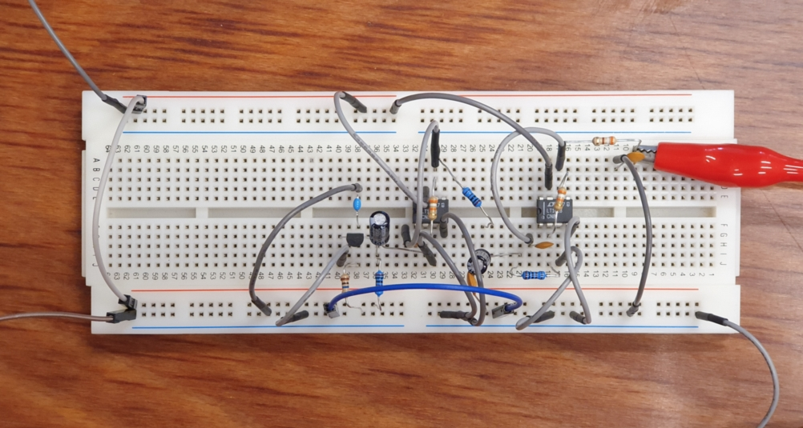Figure 1: A photograph of the breadboard with the setup, represented by Figure 1 in the proposal. The jumper cables in the top left and bottom left respectively connect to the positive and negative pole of the battery. The cable on the bottom right connects to the oscilloscope ground. The red cable on the right connects to the oscilloscope input. The dark grey diagonal cable on the left shorts the input to the ground, and can be replaced with the resistor under test.
Some measurements of the system were taken with the input shorted, like in Figure 1, to measure the noise of the amplifier (and the surroundings). There a substantial (~8 V) DC voltage present, which hinders measurements. The oscilloscope can not measure finer than 500 mV per division before the DC offset becomes too great. Some measurements were recorded at 500 mV/div and 1 ms, 1 μs and 50 ms, using single_device.py, and saved on disk with timestamp and resolution in the filename.
A solution to the DC problem was helpfully provided by the TAs: the channel on the oscilloscope was changed to AC coupling, as it was in DC coupling before. The signal can now be measured at much greater voltage resolution. The filenames of the previous data were updated to reflect that they were measured in DC mode.
Some measurements were taken with the input shorted, in AC coupling mode. Initially, a ~50 Hz signal dominated the output (Figure 2), presumed to be AC power grid interference, based on its frequency.
After disconnecting and reconnecting the input short, this behaviour ceased (Figure 3).
The behaviour resumed when keeping the input disconnected (Figure 4).
This suggests it was a connection issue.
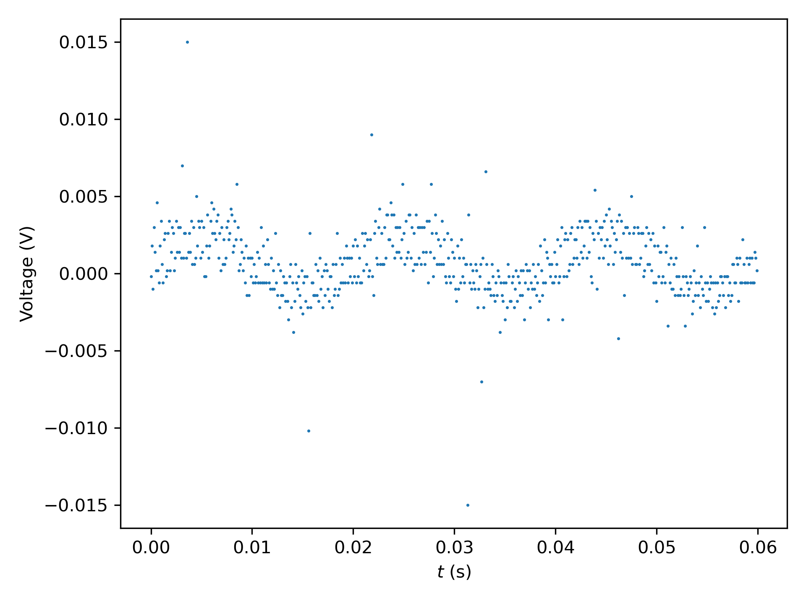
Figure 2: \(V(t)\) measured with the input shorted, with resolution 10 mV / div., 5 ms / div. The frequency of the large oscillations is approximately 50 Hz, suggestion it is interference from the AC power grid.
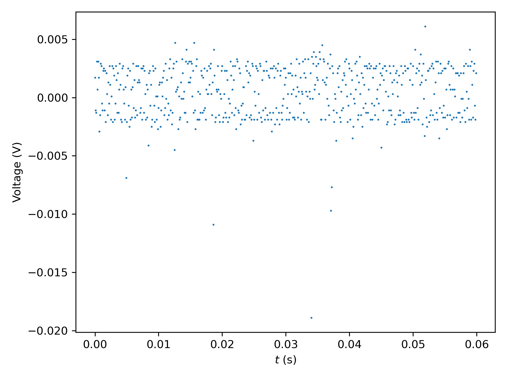
Figure 3: \(V(t)\) measured with the input shorted, with resolution 10 mV / div., 5 ms / div. The 50 Hz oscillations are gone, and remained gone with subsequent measurements. \(V_{\mathrm{RMS}} ≈ 2.3\text{ mV}\).
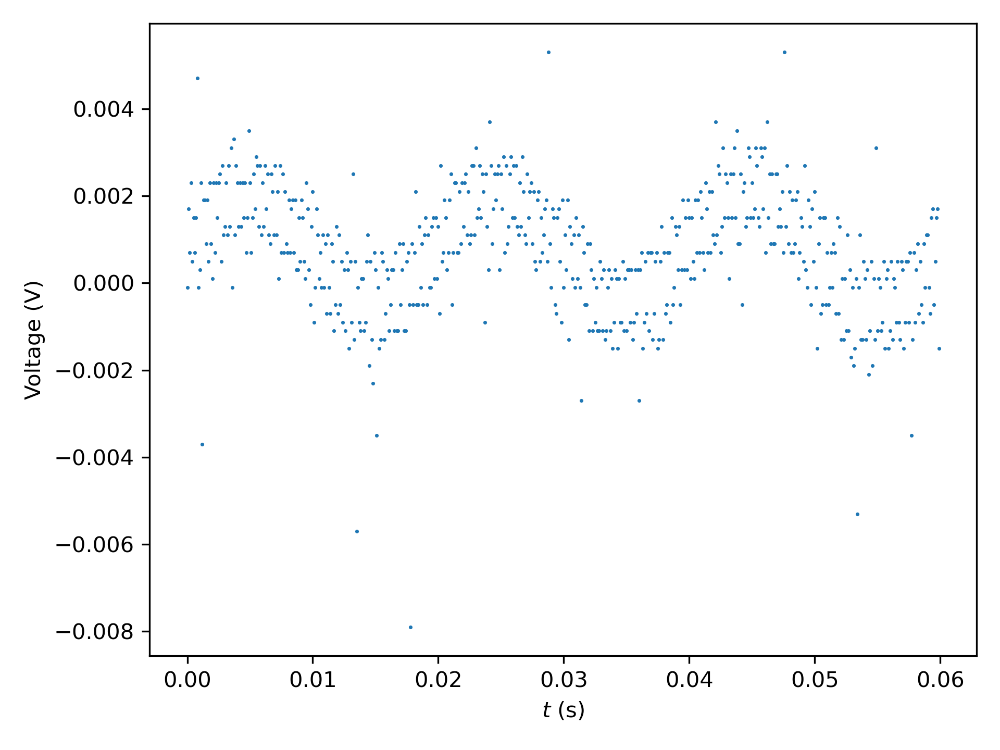
Figure 4: \(V(t)\) measured with the input disconnected, with resolution 10 mV / div., 5 ms / div. The oscillations are again approximately 50 Hz, like Figure 2. This persists with subsequent measurements.
End of session. Plan for next session:
Take some more shorted measurements for background noise determination;
Measure some resistors;
Modify the setup by using two 9 V batteries, to power the op amps with +9 V and -9 V instead of +9 V and 0 V.
Session 3
Session 3, 26th of April 2024
The setup is connected and the signal is visually checked on the oscilloscope to check if everything is still connected properly. Everything looks the same as last time.
Some more data with the input shorted was recorded, with 10 ms / div. and 500 μs / div.
Four measurements with 10 ms / div. and four with 500 μs / div. give respectively \(V_{\mathrm{RMS}} \approx 1.29\ \pm\ 0.07\ \text{mV}\) and \(V_{\mathrm{RMS}} \approx 1.52\ \pm\ 0.12\ \text{mV}\). The error is the standard deviation.
Several different resistors I have on hand are put under test, and several oscilloscope traces will be recorded for each, with the smallest voltage per division allowed without frequent clipping, and with both 10 ms and 500 us time settings.
390 Ω
5 mV / div. can be used without clipping most of the time.
Ten measurements have been taken with each setting.
39 kΩ
The same settings and procedures are used.
As a preliminary judgement, the noise looks no different than with 390 Ω.
10 MΩ
The signal seems slightly noisier, judging by the \(V_{\mathrm{RMS}}\) readout, but the AC interference is now visible again (Figure 5), though to a lesser degree than with the input disconnected.
The calculated \(V_{\mathrm{RMS}}\) are recorded in table 1.
Table 1: The calculated \(V_{\mathrm{RMS}}\) for each resistor with both time resolutions. The error is obtained by taking the standard deviation of the ten calculated values.
\(R\text{ (Ω)}\)
\(V_{\mathrm{RMS}}\ (\text{mV, }10\text{ ms})\)
\(V_{\mathrm{RMS}}\ (\text{mV, }500\text{μs})\)
390
1.37 ± 0.16
1.41 ± 0.12
39 k
1.28 ± 0.08
1.37 ± 0.10
10 M
1.61 ± 0.10
1.51 ± 0.10
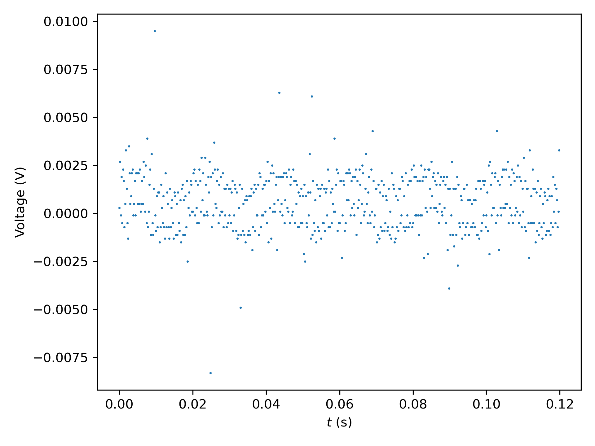
Figure 5: \(V(t)\) measured with a 10 MΩ resistor connected. Like with the input disconnected, AC interference is visibly present. The signal is distinct from a signal with no connection, so it is not likely a connection issue.
The noise is unexpectedly lower at 39 kΩ than at 390 Ω. 10 MΩ is higher, so it may be worth measuring some resistors in between.
Before measuring more, last session's suggestion to use two batteries is implemented. Two batteries are connected in series. The positive pole is connected to the positive power rail. The negative has been connected to the top-right negative power rail. The other three negative power rails are still ground.
End of session. Plan for next session:
Redo some measurements with the changed setup;
Investigate the possibility of using the myDAQ instead of the oscilloscope;
Measure gain using function generator or myDAQ.
Session 4
Session 4, 30th of April 2024
The setup has been connected to a NI myDAQ with TOO interface. The input, which was previously connected to the oscilloscope, is now connected to AI1. The ground is now connected to AGND.
The resistors are measured again using the myDAQ, controlled by Python. The resistor will be measured for 100,000 samples with 100,000 samples per second, after which the standard deviation is used to determine the noise \(V_{\mathrm{RMS}}\). This process is repeated ten times per resistor. The obtained values for \(V_{\mathrm{RMS}}\) are averaged to obtain the final value, and the standard deviation is taken to see how an uncertainty due to fluctuation over time. The results are shown in Table 2. Like before, the 10 MΩ resistor shows AC interference, shown in Figure 6.
Table 2: The \(V_{\mathrm{RMS}}\) of various resistors measured with the myDAQ.
\(R\ (\text{Ω})\)
\(V_{\mathrm{RMS}\ (\text{mV})}\)
∼ 0
0.43 ± 0.01
390
0.44 ± 0.01
39k
0.44 ± 0.02
1M
0.43 ± 0.02
10M
0.66 ± 0.01
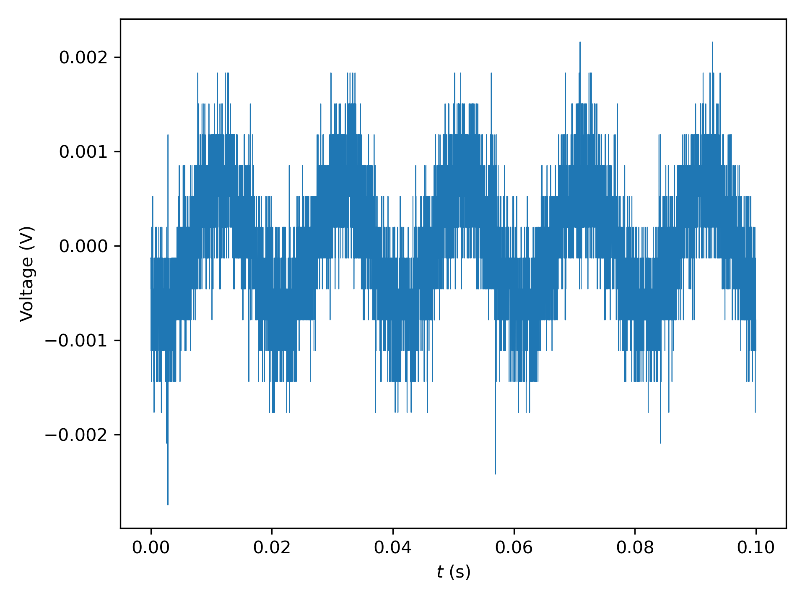
Figure 6: Strong AC interference in a \(V(t)\) measurement of a 10 MΩ resistor taken with the myDAQ.
While not visible, AC interference is strongly present with the lower resistances as well, see Figure 7.
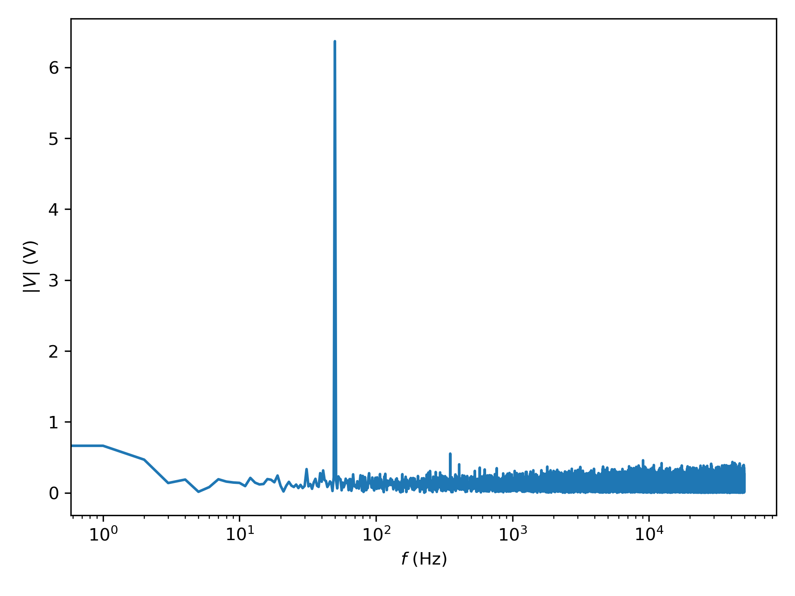
Figure 7: Fourier transform of a \(V(t)\) measurement of a 390 Ω resistor. A strong peak is visible at 50 Hz.
In an attempt to determine whether using a high-pass filter is useful, some measurements where taken with the frequencies below 60 Hz digitally removed.
\(R\ (\text{Ω})\)
\(V_{\mathrm{RMS}\ (\text{mV})}\)
∼ 0
0.41 ± 0.01
390
0.415 ± 0.005
39k
0.411 ± 0.003
1M
0.515 ± 0.006
5M
0.53 ± 0.01
10M
0.401 ± 0.002
Session 5
Session 5, 1st of March 2024
To determine the transfer function of the system, the input is connected to the myDAQ's AO0. The output is connected to AI0, and AO0 is also directly connected to AI1. The myDAQ now sends a series of sinusoidal signals, ranging from 1 to 50,000 Hz, with an amplitude of 0.1 V, 100,000 samples per measurement, and 10 periods per signal.
By comparing the amplitude of the system output and the input at each frequency, the transfer function can be obtained, which is shown in Figure 8. Figure 9 shows one the input and output of one of the measurements. The output is much smaller than the input, which indicates something is wrong. This phenomenon appeared in many of the measured signals.
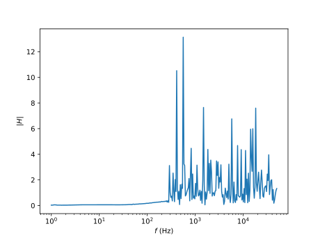
Figure 8: The obtained transfer function. The result is very noisy and not at all what is expected.
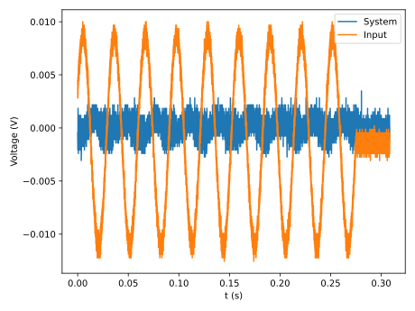
Figure 9: The input and output signals compared at ~32.4 Hz. Note that the output signal had a substantial DC component, which is removed here. The output is significantly smaller than the input, which is quite the opposite of the intended effect.
Another problem plaguing the characterisation of the gain is the delay between starting the writing of the signal and reading the output. This is already visible in Figure 9, as the first of the ten peaks is missing, and the end shows some signal where input has already ceased. This is much more pronounced at higher frequencies.
This is an issue that should be fixed in the code used for using the myDAQ. A simple workaround would be to measure many more than 10 waves, but this would significantly increase the time it takes.
The system was connected to a function generator (Siglent SDG830) and oscilloscope to troubleshoot. The results are similar to those before, tested at various amplitudes between 1 V and 10 mV, at frequencies in the kHz range.
Helpful TA intervention revealed that I had neglected to ground the batteries. The two 9 V batteries are connected in series. The positive side applies a voltage to the JFET drain and the op amps' positive supply input. The negative side connects to the op amps' negative supply input. The circuit is grounded to the oscilloscope or myDAQ. The batteries, however, were not grounded at all. Now, the batteries are connected, through a point between the batteries, to the common ground. See Figure 10. This seems to resolve the issue. One oscilloscope trace of the working system is shown in Figure 11.
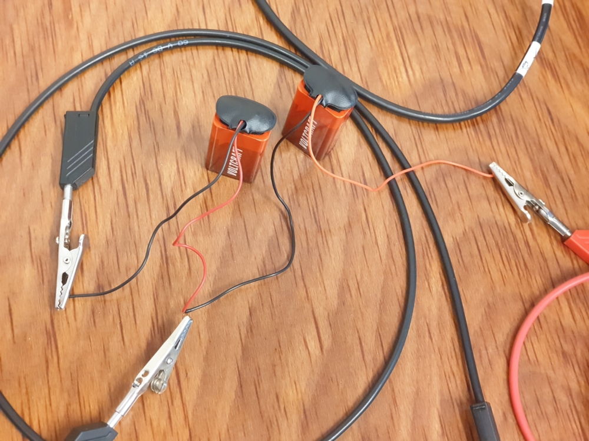
Figure 10: The batteries connected properly. The left and right cables connect to -9 V and +9 V on the breadboard respectively. The central cable connects to the common ground. This ground connection was missing earlier.
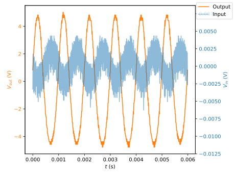
Figure 11: An oscilloscope trace of the input and output signal of the fixed system, driven using frequency 1 kHz, amplitude 4 mV with the function generator. Note the different scales: the input signal has an amplitude of around 4 mV, as set on the function generator, but the output has an amplitude of approximately 10 V.
The connection of the battery to the ground is very sensitive. It often seems to not connect properly, giving a very noise, useless signal. Reconnecting or slightly bending the input until it works again fixes the issue. At one point, the gain notably increased, clipping the output signal. This could not be reproduced.
The setup is moved over on the desk, as to make more efficient use of the space available. This required disconnecting and reconnecting parts of the setup. The setup has been connected to the oscilloscope to verify that it is connected properly. After fiddling a bit with the battery ground connector and the +9 V jumper cable, the setup works again. Interestingly, the gain seems to have increased. A 4 mV, 1 kHz sine like before now produces a heavily malformed output. Increasing or decreasing the frequency enough to end up in the lower gain region leads to a clean sine output again.
The signal generator only goes down to 4 mV, but the myDAQ can go lower. At 1 mV, 1 kHz, the myDAQ can measure a recognisable signal, shown in Figure 12. Figure 13 shows the FFT of the output signal, showing a clearly identifiable peak at he right frequency.
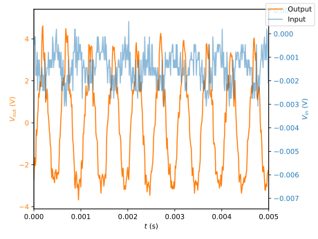
Figure 12: Input and output signals measured with the myDAQ of the system driven by a 1 kHz, 1 mV signal from the myDAQ. The signals look messy and not quite centred at 0 V, but are still recognisable.
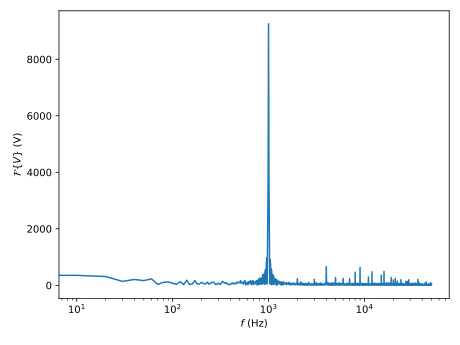
Figure 13: The FFT of the output signal shown in Figure 12. A clear peak is visible at 1000 Hz, which is the frequency with which the system is driven.
Session 6
Session 6, 3rd of March 2024
The system was quickly tested to verify that it still works. It does.
Some attempts were made to measure a transfer function by writing sinusoidal signals of various frequencies and reading the input and output signals. Both writing and reading are done with the myDAQ. This did not work out well, as the myDAQ does not support a trigger, so reading the entire output signal proved difficult.
A lot of time has been spent on modifying the python code used to read and write with the myDAQ. There were some mistakes in the code, which was written without the ability to test it beforehand, which took some time to fix. This debugging is mostly not written down, as that would be most tedious and not very productive, but this makes the journal for this session look very sparse.
Because the myDAQ does not support triggers, there is a delay between starting the reading and writing. I settled on writing a zero padding of half a second before and after the signal. The signal consists of an integer amount of sine periods: 10 or however many almost fit in 1 second, whichever is greater. The minimum time of 1 second is chosen so that the noise in the zero-padding does not dominate the signal. The input signal has an amplitude of only 1 mV, as to avoid saturating the op amps, so background noise and interference is rather significant.
Now that the method seems to work, as indicated by a few test signals, a large transfer function measurement was started: 1 Hz to 100 kHz, 20 measurements per octave, amplitude +1 mV1, sample rate 200,000 Hz (the highest the myDAQ is capable of).
For later analysis, the results of each sine of the transfer function measurement is saved to disk. This is a lot of data and takes very long to write using numpy.savetxt. numpy.save is significantly faster. To get the measurement done faster, the decision was made to save all the data in memory, and write to disk when all measuring was done. With the large measurement, this led to a catastrophic out-of-memory situation, with a forced reboot as only solution. This was a tedious ordeal which wasted even more time.
The code is fixed. Because time is running out, only a small measurement with identical settings, but 2 frequencies per octave was performed. The result is shown in Figure 14.
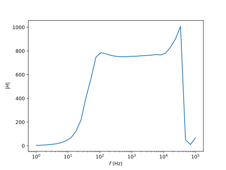
Figure 14: A transfer function of the system measured with sine waves from 1 Hz to 100 kHz, 2 frequencies per octave, amplitude 1 mV, sample rate 200 kHz. The strange concave plateau suggests that something is amiss.
It turns out that the output is still clipped at large gains, see Figure 15. This is because I accidentally used 10 mV instead of the intended 1 mV. 4 mV was already known to be too much, so clipping at 10 mV is no surprise.
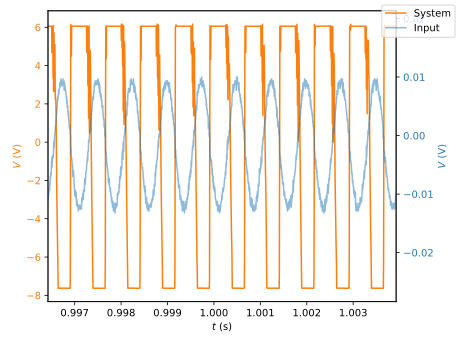
Figure 15: Input and output signal at ~1.33 kHz. The output signal is clipped, which explains the behaviour in Figure 14. It also reveals that the output was set to 10 mV, not 1 mV, which is a mistake.
Session 7
Session 7, 7th of March 2024
The setup was connected and its functionality verified by a quick test signal. All seems well.
There appears to be still be some clipping at 1 mV amplitude, see Figure 16. An amplitude of 0.5 mV seems sufficiently small, see Figure 17.
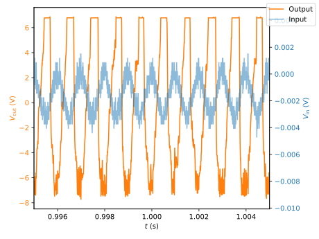
Figure 16: Input and output signal at 1 kHz, amplitude 1 mV. The output signal is still somewhat clipped.
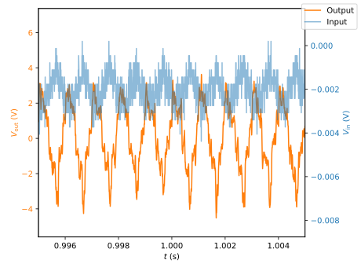
Figure 17: Input and output signal at 1 kHz, amplitude 0.5 mV. The output signal is no longer clipped.
Another attempt was made to measure the transfer function. This resulted in some nonsensical results, but before the issue could be diagnosed, the computer froze again, despite measures to reduce memory usage. This, combined with the TOO computer's lack of persistence, made for a very frustrating and annoying waste of time.
At such a low amplitude as 0.5 mV, there is often hardly a distinguishable signal. A possible solution is an HDR approach: the transfer function is measured with multiple amplitudes, and the results are combined to make a single transfer function valid in both high and low gain regions. This is, however, rather time consuming.
The transfer function is measured with 0.5 mV, 1 Hz to 100 kHz, sample rate 200 kHz, 20 frequencies per octave. The result is useless.
In order to reduce the noise, the system can be isolated from interference and background noise by wrapping it in aluminium foil.
Before applying the insulation, the noise is measured with the input shorted. Multiple 10 second, 200 kHz sampling measurements were taken. The \(V_{\mathrm{RMS}}\) varies over time, but remains at about 35 mV.
The exposed conducting ends of the connectors are loosely wrapped in plastic foil to prevent contact with the conductive aluminium foil. The \(V_{\mathrm{RMS}}\) now is around 40 mV. This may be a consequence of the foil, or the background may have changed.
The cables have been moved around to make the setup more compact, to fit it in the aluminium foil. This caused the signal to blow up. By connecting the output and ground the the oscilloscope and fiddling the the system until it worked again, the problem seems to have been resolved. The issue mostly seems to have been the jumper cable shorting the input.
While connected to the oscilloscope to monitor the system, the breadboard, batteries, myDAQ and cables are wrapped in aluminium foil. The output signal on the oscilloscope has not changed much, so there is probably no short, but the \(V_{\mathrm{RMS}}\) readout seems to have decreased somewhat. The oscilloscope shows a ~8 MHz signal, which is still present.
The noise \(V_{\mathrm{RMS}}\) is now approximately 36 mV. This is slightly worse than without insulation, but it does seem slightly more consistent over time.
The noise is measured for 200,000 samples with sample rate 200 kHz. This is repeated 10 times. For the shorted input, this gives 34.15 ± 0.05 mV.
The same process three minutes later, without touching the setup, gives 33.9 ± 0.1 mV. The result is still very variant over long times, probably still as a consequence of outside interference.
The same process in repeated for various resistors. The results are recorded in Table 3.
Table 3: The noise for various resistors. These measurements are obtained by measuring each resistor for 200,000 samples with sample rate 200 kHz, repeated ten times. The mean is the resulting \(V_{\mathrm{RMS}}\), and the standard deviation is \(\sigma_{V_{\mathrm{RMS}}}\). The measurements are repeated multiple times per resistor, because the background changes over time and this gives a better indication of the real uncertainty.
time
\(R\) (Ω)
\(V_{\mathrm{RMS}}\) (mV)
\(\sigma_{V_{\mathrm{RMS}}}\) (mV)
11:09:32
390
35.3
0.4
11:13:18
390
34.5
0.3
11:16:54
390
34.99
0.08
11:18:54
39k
155.7
0.9
11:19:42
39k
156.2
0.7
11:20:26
39k
156
2
11:21:03
39k
155.2
0.5
11:26:49
100k
369
1
11:27:21
100k
366.0
0.7
11:27:55
100k
363
1
11:28:28
100k
366
1
11:29:24
100k
364
1
11:31:04
200k
632
14
11:31:43
200k
631
5
11:32:16
200k
622
2
11:32:44
200k
624
12
11:33:28
200k
622
2
11:33:53
200k
626
3
11:35:54
500k
5322
2
11:36:54
500k
5320
1
11:37:09
500k
5320
2
11:37:44
500k
5317
1
11:38:28
500k
5308
4
11:38:51
500k
5309
2
11:39:18
500k
5317
2
11:41:43
1M
5536
1
11:42:09
1M
5533
1
11:42:31
1M
5534.0
0.8
11:43:09
1M
5531.3
0.9
11:43:50
1M
5531
1
The noise does noticeably increase with resistance, but there is still a 50 Hz signal present.
Because the table frame may act as an antenna, the setup has been moved to the top of a cardboard box on a chair. Quick analysis with the oscilloscope, with the input of the amplifier shorted, shows no recognisable 50 Hz signal. There MHz signal is still present, but this time at ~7.1 MHz.
Though the oscilloscope shows no recognisable 50 Hz signal (Figure 19), the myDAQ shows a very clear 50 Hz signal (Figure 18). The oscilloscope does show a ~7.5 MHz signal (Figure 20), which the myDAQ cannot measure due to its slower sample rate.
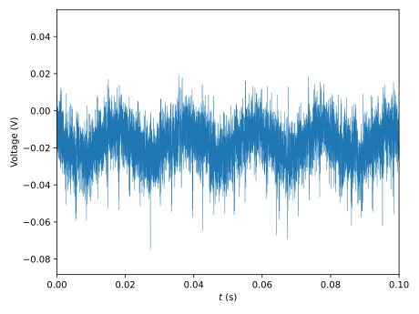
Figure 18: Signal measured with the myDAQ, measured with sample rate 200 kHz, with the amplifier input shorted, with the setup wrapped in aluminium foil and situated on a box on the chair. A clear 50 Hz signal is visible.
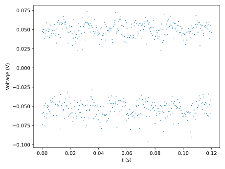
Figure 19: Signal measured with the oscilloscope of the box-situated, insulated setup. There is no 50 Hz signal visible, which would have five periods in this 120 ms interval.
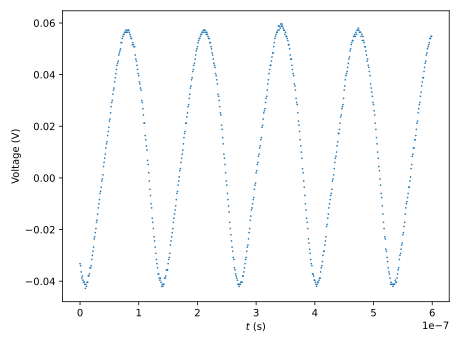
Figure 20: Signal measured with the oscilloscope of the box-situated, insulated setup. There is an approximately 7.5 MHz signal present. This signal cannot be directly measured with the myDAQ, which has a maximum sample rate of only 200 kHz.
Session 8
Session 8, 8th of March 2024
The setup was connected to the oscilloscope, and no 50 Hz interference was seen. The setup was then connected to the myDAQ. It initially showed relatively little 50 Hz interference, but it soon rose to the original level.
After unplugging and replugging the ground connection to the myDAQ's AGND, the 50 Hz component seems to be reduced to no higher than surrounding components. Unplugging the ground seems to have no substantial result, but neither does replugging it. Instead of investigating this further now, I will take advantage of this effect and do some measurements.
A coarse sample transfer function around a small region produces a much nicer result than before, see Figure 21.
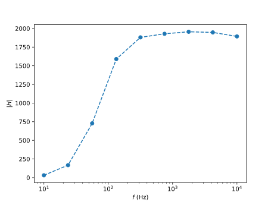
Figure 21: The transfer function of the circuit measured from 10 Hz to 10 kHz, amplitude 0.5 mV, 1 frequency per octave. It looks much better than the transfer function obtained before.
Following this promising result, a larger, finer transfer function measurement is started, from 1 Hz to 100 kHz, 0.5 mV amplitude, 10 frequencies per octave. The result is shown in Figure 22. It looks mostly smooth and has a reasonable shape and amplitude. There are two interesting features: there are five points with significantly greater amplitude than their neighbours, which may just be outliers, and there is a strange second, narrow maximum near the upper cut-off.
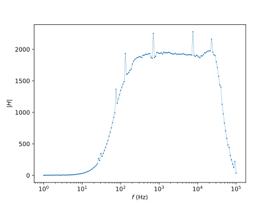
Figure 22: The transfer function of the circuit measured from 1 Hz to 100 kHz, amplitude 0.5 mV, 10 frequencies per octave. It has about the right shape and order of magnitude, and looks smooth, except for the occasional outlier.
To investigate the five outliers, another transfer function is measured with the same parameters. The result is shown in Figure 23. It looks largely the same as before, but with more outliers, at different positions. The two transfer functions are compared in Figure 24.
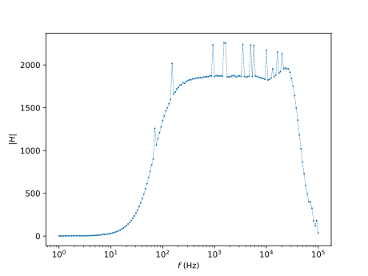
Figure 23: The transfer function of the circuit measured a second time from 1 Hz to 100 kHz, amplitude 0.5 mV, 10 frequencies per octave. It is very similar to the first, but with more outliers.
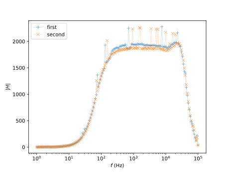
Figure 24: Transfer functions of Figures 22 and 23 overlaid. While they are similar in the ends and in overall shape, the high gain plateau is noticeably different in amplitude and fine detail.
Because the 50 Hz interference is gone, and I'd really like some usable data, \(V_{\mathrm{RMS}}\) is measured the same way as last session. The results are recorded in Table 4.
Table 4: The noise for various resistors, obtained the same way as Table 3. There seems to be no significant difference between the resistors.
time
\(R\) (Ω)
\(V_{\mathrm{RMS}}\) (V)
\(\sigma_{V_{\mathrm{RMS}}}\) (V)
14:39:08
0
0.21
0.02
14:40:07
0
0.168
0.008
14:40:56
0
0.18
0.02
14:41:25
0
0.19
0.02
14:41:50
0
0.18
0.02
14:43:15
390
0.13
0.01
14:44:11
390
0.14
0.01
14:44:46
390
0.137
0.008
14:45:26
390
0.121
0.007
14:45:54
390
0.118
0.007
14:47:18
39k
0.3
0.2
14:48:05
39k
0.18
0.01
14:48:32
39k
0.17
0.01
14:49:07
39k
0.17
0.01
14:49:47
39k
0.18
0.02
The system is connected to the oscilloscope to diagnose the issue. The presence of 50 Hz interference is very inconsistent. When in appeared before, the \(V_{\mathrm{RMS}}\) between resistors differed significantly and consistently. Now it does not, there is no significant difference. Before, the interference seemed only present when connected to the myDAQ. Now, it still is no very visible in the time domain, but it occasionally shows up in the frequency domain. Looking at both the \(V_{\mathrm{RMS}}\) readout and the FFT on the oscilloscope, it doesn't seem to make much difference whether the system is connected to the myDAQ AGND or oscilloscope, or not at all. What does make a difference, is connecting the ground to the aluminium foil. If a 50 Hz peak was present, it vanishes quickly, and the floor of surrounding frequencies diminish as well. \(V_{\mathrm{RMS}}\) does not really change at all. Care has been taken to ensure no exposed conductors contact the foil, and indeed, lifting all the connectors up to ensure there really is no connection does not change matters. Time is running out, however, and there is not enough time left to investigate this issue or its consequences.
The setup is disconnected, dismantled and the parts are returned to whence they came.
{kind=link}